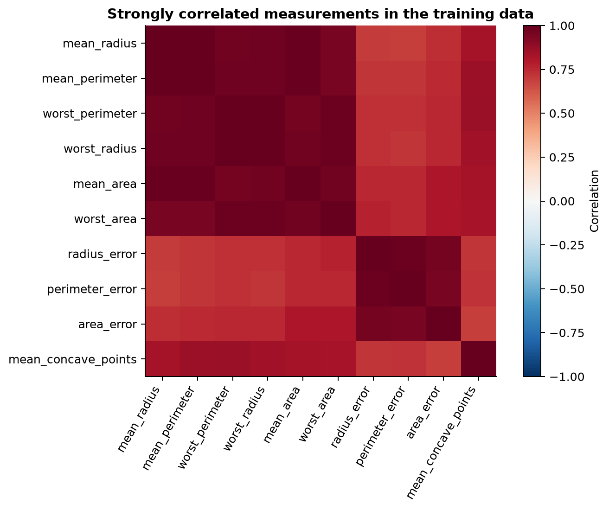
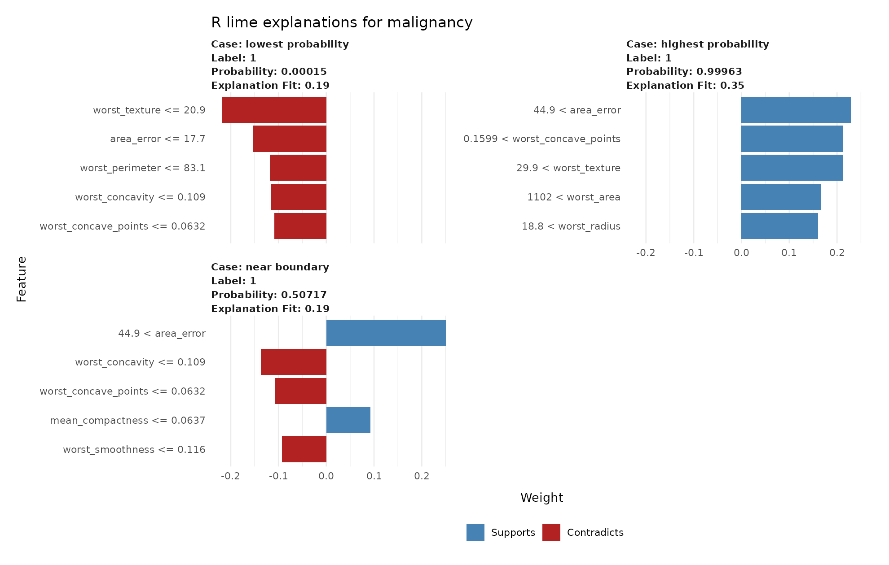
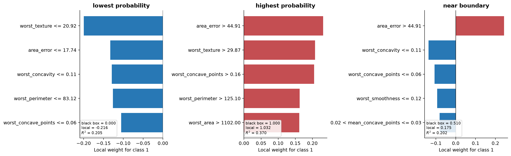

4 Exercise: explaining breast-cancer predictions
4.1 Data and setup
The Breast Cancer Wisconsin Diagnostic dataset contains 569 observations and 30 continuous features computed from digitized images of fine-needle aspirates of breast masses. Ten nuclear properties, including radius, texture, area, smoothness, and concavity, are summarized by their mean, standard error, and a worst value. The outcome is malignant or benign.
The local file contains a fixed training and test split, so R and Python use the same observations. Download breast_cancer_wisconsin.csv and exercise_cases.csv when working elsewhere.
Wolberg, W., Mangasarian, O., Street, N., and Street, W. (1993). Breast Cancer Wisconsin (Diagnostic). UCI Machine Learning Repository. doi:10.24432/C5DW2B. It is distributed under the CC BY 4.0 license.
library(xgboost)
library(lime)
library(ggplot2)
bc <- read.csv("data/breast_cancer_wisconsin.csv")
case_ids <- read.csv("data/exercise_cases.csv")
feature_cols <- setdiff(names(bc), c("sample_id", "malignant", "split"))
train <- bc[bc$split == "train", ]
test <- bc[bc$split == "test", ]
cases <- merge(test, case_ids, by = "sample_id")
cases <- cases[match(case_ids$sample_id, cases$sample_id), ]
cat(nrow(bc), "observations and", length(feature_cols), "features\n")
table(bc$malignant)569 observations and 30 features
0 1
357 212import numpy as np
import pandas as pd
import matplotlib.pyplot as plt
import xgboost as xgb
from lime.lime_tabular import LimeTabularExplainer
from sklearn.metrics import accuracy_score, confusion_matrix, roc_auc_score
bc = pd.read_csv("data/breast_cancer_wisconsin.csv")
case_ids = pd.read_csv("data/exercise_cases.csv")
feature_cols = [c for c in bc.columns if c not in ("sample_id", "malignant", "split")]
train = bc[bc["split"] == "train"].copy()
test = bc[bc["split"] == "test"].copy()
cases = case_ids.merge(test, on="sample_id", how="left")
print(len(bc), "observations and", len(feature_cols), "features")
print(bc["malignant"].value_counts().sort_index())569 observations and 30 features
malignant
0 357
1 2124.2 Exercise 1. Inspect the measurements
Summarize the outcome and predictors. Check for missing values and calculate the feature correlation matrix. Report at least five highly correlated pairs. Explain why radius, perimeter, and area measurements might be correlated and why this matters for a sparse LIME explanation.
Do not remove correlated features automatically. The aim is to recognize them before interpreting the model.
Use cor() and which(..., arr.ind = TRUE) in R. In Python, use DataFrame.corr(), keep one triangle with np.triu(), then reshape with stack(). Sort pairs by absolute correlation.
stopifnot(!anyNA(bc[, feature_cols]))
cor_mat <- cor(train[, feature_cols])
cor_mat[lower.tri(cor_mat, diag = TRUE)] <- NA
pair_index <- which(!is.na(cor_mat), arr.ind = TRUE)
cor_pairs <- data.frame(
feature_1 = rownames(cor_mat)[pair_index[, 1]],
feature_2 = colnames(cor_mat)[pair_index[, 2]],
correlation = cor_mat[pair_index]
)
cor_pairs <- cor_pairs[order(abs(cor_pairs$correlation), decreasing = TRUE), ]
head(cor_pairs, 10)assert not bc[feature_cols].isna().any().any()
cor_mat = train[feature_cols].corr()
upper = np.triu(np.ones(cor_mat.shape, dtype=bool), k=1)
cor_pairs = (
cor_mat.where(upper).stack().rename("correlation").reset_index()
.rename(columns={"level_0": "feature_1", "level_1": "feature_2"})
)
cor_pairs["absolute_correlation"] = cor_pairs["correlation"].abs()
cor_pairs.sort_values("absolute_correlation", ascending=False).head(10)| Feature 1 | Feature 2 | Training correlation |
|---|---|---|
mean_radius |
mean_perimeter |
0.998 |
worst_radius |
worst_perimeter |
0.994 |
mean_radius |
mean_area |
0.987 |
mean_perimeter |
mean_area |
0.986 |
worst_radius |
worst_area |
0.984 |

Radius, perimeter, and area all measure nuclear size. Mean and worst summaries of the same property are also related. Sparse selection may choose one member of such a group in one run and another member in a later run. The selected name should not be treated as uniquely responsible.
4.3 Exercise 2. Fit and evaluate a nonlinear classifier
Fit the supplied XGBoost specification using the fixed training rows. On the test rows, calculate AUC, accuracy, and a confusion matrix. Confirm that probability column 1 in Python and the numeric vector returned in R represent malignancy.
Explain why good test performance is necessary before interpretation but does not prove that the model is clinically useful or causally correct.
In Python, inspect fit.classes_ before selecting a column from predict_proba(). In R, the binary:logistic objective returns the probability of label 1. Use roc_auc_score() in Python. The solution supplies a small rank-based AUC function for R.
dtrain <- xgb.DMatrix(as.matrix(train[, feature_cols]), label = train$malignant)
fit <- xgb.train(
params = list(
objective = "binary:logistic", eval_metric = "logloss",
max_depth = 3, eta = 0.05, subsample = 0.9,
colsample_bytree = 0.9, nthread = 1, seed = 2026
),
data = dtrain, nrounds = 300, verbose = 0
)
test_probability <- predict(fit, as.matrix(test[, feature_cols]))
test_class <- as.integer(test_probability >= 0.5)
auc <- function(y, p) {
r <- rank(p); n1 <- sum(y == 1); n0 <- sum(y == 0)
(sum(r[y == 1]) - n1 * (n1 + 1) / 2) / (n1 * n0)
}
cat("AUC:", round(auc(test$malignant, test_probability), 4), "\n")
cat("accuracy:", round(mean(test_class == test$malignant), 4), "\n")
table(actual = test$malignant, predicted = test_class)AUC: 0.9974
accuracy: 0.9609
predicted
actual 0 1
0 77 3
1 2 46fit = xgb.XGBClassifier(
n_estimators=300, max_depth=3, learning_rate=0.05,
subsample=0.9, colsample_bytree=0.9,
eval_metric="logloss", random_state=2026, n_jobs=1,
)
fit.fit(train[feature_cols], train["malignant"])
print("class order:", fit.classes_)
test_probability = fit.predict_proba(test[feature_cols])[:, 1]
test_class = (test_probability >= 0.5).astype(int)
print("AUC:", round(roc_auc_score(test["malignant"], test_probability), 4))
print("accuracy:", round(accuracy_score(test["malignant"], test_class), 4))
print(confusion_matrix(test["malignant"], test_class))class order: [0 1]
AUC: 0.9977
accuracy: 0.9688
[[77 3]
[ 1 47]]The fitted models discriminate these test rows well. This does not establish transportability, calibration, fairness, clinical utility, or causal validity.
4.4 Exercise 3. Explain three contrasting predictions
The saved IDs identify a low-probability observation, a high-probability observation, and one near the fitted decision boundary. Explain the malignant class with five features and 5,000 perturbations. Record the black-box probability, local prediction, local R-squared, selected features, and weights. Decide how strongly each explanation should be trusted.
Use lime() and explain(..., labels = "1") in R. Use LimeTabularExplainer() and explain_instance(..., labels=(1,)) in Python. Compare label_prob with model_prediction in R, or predict_proba[1] with local_pred[0] in Python. Fidelity is model_r2 in R and score in Python.
explainer <- lime(train[, feature_cols], fit)
set.seed(2026)
case_lime <- explain(
cases[, feature_cols], explainer, labels = "1",
n_features = 5, n_permutations = 5000
)
diagnostics <- unique(case_lime[, c(
"case", "label_prob", "model_prediction", "model_r2"
)])
diagnostics$absolute_local_error <- abs(
diagnostics$label_prob - diagnostics$model_prediction
)
diagnostics
suppressWarnings(plot_features(case_lime))case label_prob model_prediction model_r2 absolute_local_error
1 0.0001 -0.208 0.195 0.208
2 0.5072 0.335 0.192 0.172
3 0.9996 1.067 0.345 0.068
explainer = LimeTabularExplainer(
train[feature_cols].to_numpy(), mode="classification",
feature_names=feature_cols, class_names=["benign", "malignant"],
random_state=2026,
)
case_rows = []
for _, row in cases.iterrows():
ans = explainer.explain_instance(
row[feature_cols].to_numpy(dtype=float), fit.predict_proba,
labels=(1,), num_features=5, num_samples=5000,
)
black_box = float(ans.predict_proba[1])
local = float(ans.local_pred[0])
case_rows.append({
"case_type": row["case_type"], "black_box": black_box,
"local_prediction": local,
"absolute_local_error": abs(black_box - local),
"local_r2": float(ans.score),
"features": ans.as_list(label=1),
})
case_results = pd.DataFrame(case_rows)
print(case_results.drop(columns="features"))case_type black_box local_prediction absolute_local_error local_r2
lowest probability 0.0002 0.2160 0.2158 0.2046
highest probability 0.9996 0.9902 0.0094 0.3453
near boundary 0.5095 0.1632 0.3463 0.1786
The high-probability explanation reproduces its target point closely, although its neighborhood-wide R-squared is modest. The near-boundary surrogate misses its black-box probability and has low fidelity. Its coefficients should not be interpreted strongly.
4.5 Exercise 4. Measure sampling stability
Repeat the near-boundary explanation for ten seeds using 1,000 perturbations. Record seed, selected feature, weight, local R-squared, and local prediction. Repeat with 10,000 perturbations and compare selection frequencies.
Place the complete explanation call inside the seed loop. In R call set.seed(seed) immediately before explain(). In Python create a new LimeTabularExplainer(random_state=seed) on each iteration. Use table() or pd.crosstab() to count selection.
boundary_case <- cases[cases$case_type == "near boundary", feature_cols, drop = FALSE]
repeat_r_lime <- function(n_permutations) {
do.call(rbind, lapply(1:10, function(seed) {
set.seed(seed)
ans <- explain(
boundary_case, explainer, labels = "1",
n_features = 5, n_permutations = n_permutations
)
transform(
ans[, c("feature", "feature_weight", "model_r2", "model_prediction")],
seed = seed, n_permutations = n_permutations
)
}))
}
r_stability <- rbind(repeat_r_lime(1000), repeat_r_lime(10000))
as.data.frame(table(r_stability$n_permutations, r_stability$feature))boundary_case = cases.loc[cases["case_type"] == "near boundary", feature_cols].iloc[0]
def repeat_python_lime(num_samples):
records = []
for seed in range(1, 11):
local_explainer = LimeTabularExplainer(
train[feature_cols].to_numpy(), mode="classification",
feature_names=feature_cols, class_names=["benign", "malignant"],
random_state=seed,
)
ans = local_explainer.explain_instance(
boundary_case.to_numpy(dtype=float), fit.predict_proba,
labels=(1,), num_features=5, num_samples=num_samples,
)
records.extend({
"seed": seed, "num_samples": num_samples,
"feature": feature, "weight": weight,
"local_r2": ans.score,
"local_prediction": float(ans.local_pred[0]),
} for feature, weight in ans.as_list(1))
return pd.DataFrame(records)
py_stability = pd.concat([
repeat_python_lime(1000), repeat_python_lime(10000)
], ignore_index=True)
pd.crosstab(py_stability["feature"], py_stability["num_samples"])| Python feature condition | 1,000 | 10,000 |
|---|---|---|
area_error > 44.91 |
10 | 10 |
worst_concavity <= 0.11 |
10 | 10 |
worst_concave_points <= 0.06 |
4 | 10 |
worst_smoothness <= 0.12 |
3 | 9 |
83.12 < worst_perimeter <= 97.82 |
5 | 7 |
compactness_error <= 0.01 |
6 | 1 |
The larger sample stabilizes some selections but does not make every feature unique. A fixed seed reproduces one run and conceals this variation.
4.6 Exercise 5. Change complexity and locality
Request 3, 5, and 10 explanatory features for the near-boundary observation. Then change one locality setting. In Python, compare half the default kernel width, the default, and twice the default. In R, compare several gower_pow values.
Keep the seed and perturbation count fixed so only one choice changes. Extract one copy of model_r2 and model_prediction from each R result. In Python record score and local_pred[0].
r_complexity <- do.call(rbind, lapply(c(3, 5, 10), function(k) {
set.seed(2026)
ans <- explain(
boundary_case, explainer, labels = "1",
n_features = k, n_permutations = 5000
)
data.frame(
n_features = k, model_r2 = unique(ans$model_r2),
local_prediction = unique(ans$model_prediction)
)
}))
r_complexity
r_locality <- do.call(rbind, lapply(c(0.5, 1, 2), function(power) {
set.seed(2026)
ans <- explain(
boundary_case, explainer, labels = "1",
n_features = 5, n_permutations = 5000,
dist_fun = "gower", gower_pow = power
)
data.frame(gower_pow = power, model_r2 = unique(ans$model_r2))
}))
r_localityn_features model_r2 local_prediction
3 0.140 0.304
5 0.170 0.304
10 0.217 0.342
gower_pow model_r2
0.5 0.171
1.0 0.170
2.0 0.170complexity = []
for k in (3, 5, 10):
local_explainer = LimeTabularExplainer(
train[feature_cols].to_numpy(), mode="classification",
feature_names=feature_cols, class_names=["benign", "malignant"],
random_state=2026,
)
ans = local_explainer.explain_instance(
boundary_case.to_numpy(dtype=float), fit.predict_proba,
labels=(1,), num_features=k, num_samples=5000,
)
complexity.append({"n_features": k, "local_r2": ans.score,
"local_prediction": float(ans.local_pred[0])})
default_width = 0.75 * np.sqrt(len(feature_cols))
locality = []
for width in (default_width / 2, default_width, default_width * 2):
local_explainer = LimeTabularExplainer(
train[feature_cols].to_numpy(), mode="classification",
feature_names=feature_cols, class_names=["benign", "malignant"],
kernel_width=width, random_state=2026,
)
ans = local_explainer.explain_instance(
boundary_case.to_numpy(dtype=float), fit.predict_proba,
labels=(1,), num_features=5, num_samples=5000,
)
locality.append({"kernel_width": width, "local_r2": ans.score,
"local_prediction": float(ans.local_pred[0])})
pd.DataFrame(complexity), pd.DataFrame(locality)n_features local_r2 local_prediction
3 0.171 0.304
5 0.202 0.175
10 0.247 0.333
kernel_width local_r2 local_prediction
2.054 0.215 0.305
4.108 0.202 0.175
8.216 0.198 0.171Ten features improve R-squared but still leave a poor approximation. The local prediction is sensitive to feature count and kernel width. A longer explanation is not automatically adequate.
4.7 Exercise 6. Correlation, plausibility, and interpretation
For every feature appearing in the repeated explanations, identify its strongest correlated partner. Inspect at least two pairs with scatterplots. Explain how independent marginal perturbation can create combinations away from the observed cloud. Suggest one additional plausibility diagnostic in 30 dimensions.
Finish with two statements: what the LIME analysis supports about this fitted model, and what it does not support about breast-cancer biology or patient care.
Drop each feature’s self-correlation and use which.max(abs(values)) in R or abs().idxmax() in Python. One high-dimensional diagnostic compares each artificial row’s nearest-training-row distance with nearest-neighbor distances among real training rows.
selected_features <- unique(r_stability$feature)
strongest_partner <- do.call(rbind, lapply(selected_features, function(feature) {
values <- cor(train[, feature_cols])[, feature]
values <- values[names(values) != feature]
partner <- names(which.max(abs(values)))
data.frame(feature = feature, partner = partner, correlation = values[partner])
}))
strongest_partner
plot(train$mean_radius, train$mean_area,
xlab = "mean radius", ylab = "mean area")
plot(train$worst_concavity, train$worst_concave_points,
xlab = "worst concavity", ylab = "worst concave points")cor_mat = train[feature_cols].corr()
partner_rows = []
for feature in feature_cols:
values = cor_mat[feature].drop(feature)
partner = values.abs().idxmax()
partner_rows.append({
"feature": feature, "partner": partner,
"correlation": values[partner],
})
partners = pd.DataFrame(partner_rows)
fig, axes = plt.subplots(1, 2, figsize=(10, 4))
axes[0].scatter(train["mean_radius"], train["mean_area"], s=15, alpha=0.4)
axes[0].set(xlabel="mean radius", ylabel="mean area")
axes[1].scatter(
train["worst_concavity"], train["worst_concave_points"],
s=15, alpha=0.4,
)
axes[1].set(xlabel="worst concavity", ylabel="worst concave points")
plt.tight_layout()
plt.show()| Selected feature | Strongest partner | Correlation |
|---|---|---|
area_error |
radius_error |
0.955 |
worst_perimeter |
worst_radius |
0.994 |
worst_concavity |
worst_compactness |
0.895 |
worst_concave_points |
mean_concave_points |
0.909 |
worst_smoothness |
mean_smoothness |
0.816 |
Independent marginal sampling can preserve each feature’s range while breaking their joint relationship. Nearest-neighbor distances can detect artificial rows far from every real training row.
A defensible conclusion is: under this LIME representation and neighborhood, the fitted XGBoost model locally relied on the listed size and shape measurements when producing these predictions. It does not follow that changing those measurements would change malignancy, that one selected measurement is uniquely important among correlated partners, or that the model is appropriate for clinical decisions.